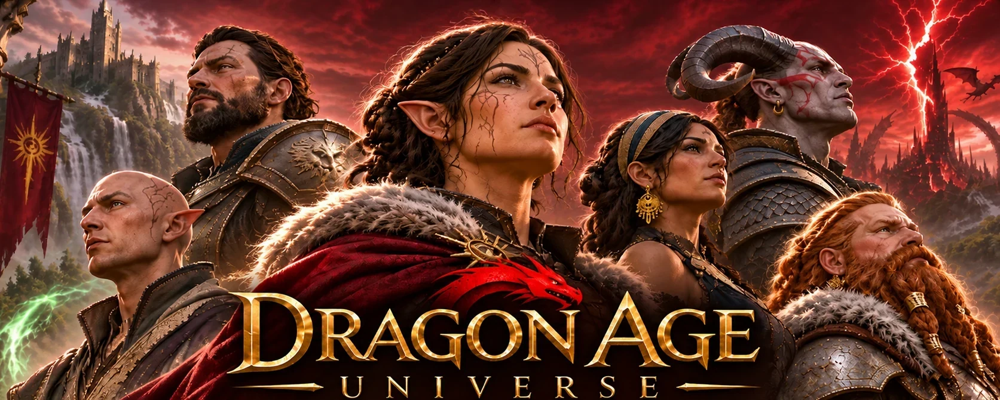

Власний герой
Обирай расу, клас, походження, стать, портрет і стартові характеристики. Кожен герой має свій шлях.

Авторська історія, що спирається на серію ігор всесвіту Dragon Age, лор, офіційні романи й комікси.
Created by Gregorth Vain
Створи свого героя. Сам вирішуй, як діяти. Кохай. Досліджуй Тедас — і відповідай за наслідки.
Безкоштовна незалежна фанатська інтерактивна ігрокнига.
Обирай расу, клас, походження, стать, портрет і стартові характеристики. Кожен герой має свій шлях.
Розгалужені сцени, небезпечні союзи, стосунки, таємниці, кілька фіналів і можливість повернутися по докази.
Темне фентезі, фракції, архіви, міста й легенди, пов’язані з чотирма епохами Dragon Age.
Гра написана для всіх читачів, які хочуть власну пригоду у Тедасі. Мови застосунку: українська, англійська та російська. Для збереження прогресу можна використовувати Google Drive.